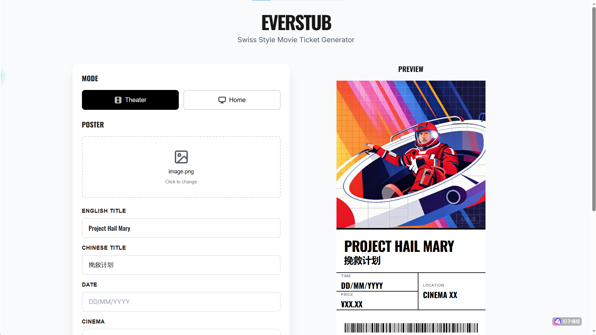
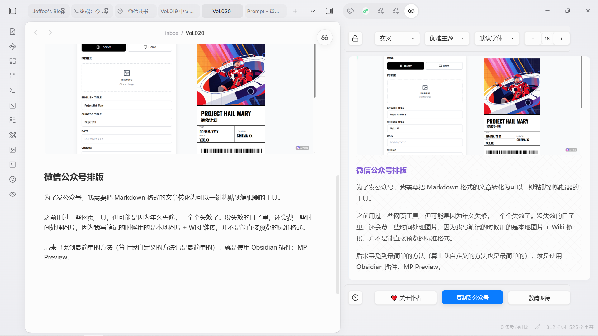
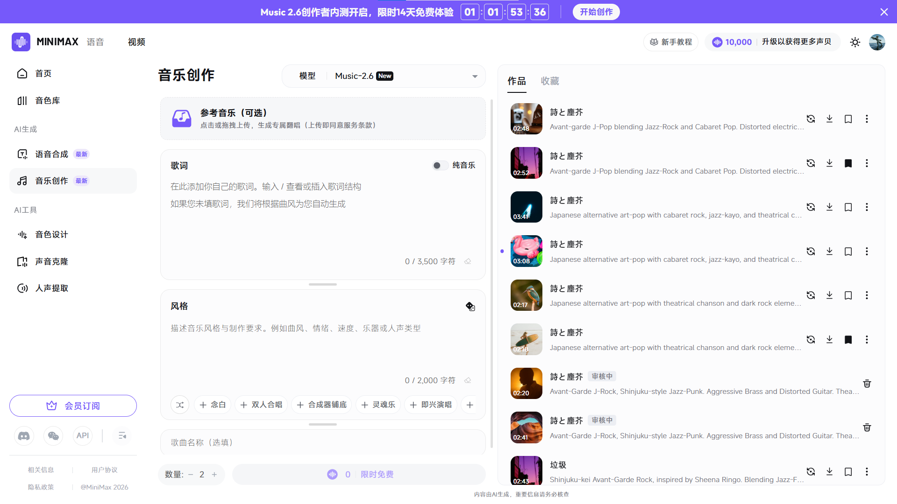

[Build-up] Eat! Eat! Eat! Eat! Eat! Eat! Eat! Eat! Garbage! Garbage! Garbage! Garbage! Eat! Eat! Eat! Eat!
(Cover designed and produced by GPT-Image-2)
🐎 The Hippodrome
📖 Dictionary of the Khazars
In 1921, the International Olympic Committee established written rules for the entry of participating countries for the first time. The charter mentioned: "Upon entering, delegations of participating countries must display a placard with their national name and their national flag at the head of the procession." There was also an accompanying note: "(Participating countries enter in alphabetical order)." It wasn't until 1949, to further highlight the Olympic ideal of universality, that a minor adjustment was made to the charter, which remains in effect today. The revised charter stipulates: The host country has the right to organize the opening ceremony's procession in the alphabetical order of the host country's language. This revision demonstrated that the IOC practically relativized the rules of this international event, thereby achieving a kind of universalization.
— Thomas S. Mullaney, The Chinese Typewriter
For instance, Dictionary of the Khazars is "a lexicon novel of a hundred thousand words," and depending on the alphabetical order of different languages, this novel will have a different ending. The original version of Dictionary of the Khazars was printed in Cyrillic, and its ending is a Latin quotation: "sed venit ut illa impleam et confirmem, Mattheus." The Greek translation of my dictionary novel ends with this sentence: "I immediately discovered that there were three fears in my heart, not just one." The English, Hebrew, Spanish, and Danish versions of this dictionary novel end like this: "Thus, when the reader returns, the whole process is reversed; Tibon begins to modify his translation based on the impression of the pronunciation the reader made while walking." The Serbian version printed in Latin letters, the Swedish version printed in the autonomous municipality of Norderstedt in North Frisia, Germany, as well as the Dutch, Czech, and German versions, all end with the following sentence: "That gaze carved the Khagan's name in the air, lighting the wick and illuminating her way home." The Hungarian version of Dictionary of the Khazars ends with: "He just wanted you to notice your true nature." The Italian and Catalan versions end like this: "In fact, although the Khazar jar disappeared long ago, it is still functioning." The Japanese version published in Japan ends with this sentence: "That young woman gave birth to a lightning-flash daughter—her own death; in death, her beauty turned to whey and clotted lotion, and then gradually dissolved, revealing a mouth sucking on white reed."
— Milorad Pavić, The Beginning and the End of Reading / The Beginning and the End of the Novel
According to a historical source, the princess's collection was called On the Desire for Words, and the Dictionary of the Khazars grew rapidly out of the soil of On the Desire for Words, like fermentation. If this account is true, then Princess Ateh is the earliest author of this dictionary, its founding matriarch. However, this ancestral version written in the Khazar language was not yet a three-volume set; it had only one volume and only one language. The places where the ancestral version evolved into the current version are very few; it is like the sadness of a dog cannot be transmitted to another dog through the mimicry of children.
— Milorad Pavić, Dictionary of the Khazars
By the loosest definition, a text with footnotes or cross-references can be considered hypertext—the former being notes at the bottom of the page, the latter telling the reader that there is more relevant information in another location of the same document. By this standard, the prototype of hypertext can be traced all the way back to early civilization; the most common example is the Jewish sacred text, The Talmud. For centuries, people have annotated its main text, and then annotated the annotations; these contents nest within each other, forming a complex web of notes and cross-references.
— Li Ke, Hypertext and Hyperlinks
From this perspective, Dictionary of the Khazars is a book that appeared before the internet, yet is most suited to be read on the internet.
— Guo Jianlong, The Inception of Khazars
🔧 The Console
🎫 EverStub
I previously used Google AI Studio to write a small application that generates movie ticket stubs (see "Keeping Time: Homemade Movie Ticket Stubs with Google AI Studio"), and this time I migrated it to "Coze."
First, I asked Gemini to provide as complete a prompt as possible, and threw it to "Coze" all at once, subsequently tweaking the details based on error reports. I could clearly feel the difference in the modeling capabilities between the two sides—an impedance mismatch. As the "ultrasound gel" bridging the two, I often had to ask Gemini to tell me the implementation methods and even the specific code, which I then relayed.
The finished product looks like this, and you can also open the link to experience it yourself: EverStub.

📱 WeChat Official Account Typesetting
To post to my official account, I need to paste my Markdown-formatted articles directly into the editor with one click.
I used to use some web tools, but perhaps due to a lack of maintenance, they stopped working one by one. On the days they weren't broken, I would still waste some time processing images because I use local images + Wiki links when taking notes, which isn't standard format that can be previewed directly.
Later, I found the simplest method (including the method I used later, this was still the simplest), which was to use an Obsidian plugin: MP Preview. It allows for real-time previewing and one-click copying.

But there are still some customized features that aren't implemented well. For example, external links disappear when pasted into the official account. To address this, I wanted to convert them directly into footnote styles.
So, I wrote a prompt like this:
# Role
You are a senior "WeChat Official Account Typesetting Expert" and "Front-end Developer." You are highly proficient in the underlying limitations of the WeChat Official Platform's rich text editor (which only supports pure inline styles and strictly filters some CSS attributes) and possess an extremely high aesthetic taste in design.
# Task
Please convert the Obsidian-formatted Markdown text I provide into high-quality HTML code that can be directly copy-pasted into the WeChat Official Account backend, using exclusively pure inline styles (Inline CSS).
# Core Processing Rules
## 1. Style and Design (Refer to article content)
- Carefully read the provided Markdown text to extract its core tone (e.g., tech, literary, academic, business, etc.).
- Based on the extracted tone, automatically design an elegant color scheme and typographical standards.
- **Global Parameter Suggestions**: Recommended font size is 15px or 16px, font color `#333333` or `#3f3f3f`, line height set between `1.75` and `2.0`, with ample paragraph spacing.
- **Note**:
1. Absolutely do not use `<style>` tags or external stylesheets. All styles must be written inside the `style="..."` attribute of tags.
2. To facilitate mobile reading, do not add a first-line indent.
## 2. Links and Obsidian Syntax Processing (Strict Execution)
- **WeChat Ecosystem Links**: If the link URL contains `mp.weixin.qq.com`, keep its `<a>` tag and add suitable inline highlight styling (like a theme color and underline).
- **External Non-WeChat Links**: Due to WeChat's restrictions, please remove the `<a>` tag. Keep the original link text and add a superscript reference number (e.g., `<sup style="color: #888;">[1]</sup>`).
- **Generate Footnotes**: At the very end of the article, automatically generate a "References" or "Further Reading" section, listing all the aforementioned non-WeChat external links sequentially by number `[1]`, `[2]`, including the original text and the URL.
- **Wiki Links Processing**: Directly delete Obsidian-specific double-bracket structures (e.g., `[[A Note]]`), retaining only the pure text within, without any link styling.
## 3. Image and Dynamic Link Processing Rules
- **Identify Obsidian Image Syntax**: Accurately identify standard Markdown images `` as well as Obsidian's specific image syntax `![[image_name.extension]]`.
- **Dynamically Replace Image Paths**: Extract the Base URL from the [Reference Image Network Link] provided by the user. For example, if provided `https://xxx.com/path/cover.png`, the base path is `https://xxx.com/path/`.
- Replace all local image paths in the Markdown text with this base path, appending the original image filename (or automatically deducing an increment based on the reference link's naming pattern).
- **Image Style Requirements**: You must add `style="max-width: 100%; height: auto; display: block; margin: 16px auto; border-radius: 8px;"` to the generated `<img>` tags to ensure perfect adaptation on mobile devices.
# Output Format
Please output the completed HTML code directly, wrapped in an ` ```html ` code block, without any redundant explanations.
# Input Data
[Obsidian Markdown Text]:
[Paste your Markdown content]
[Reference Image Network Link]:
[Paste your single image network link]
Actually, this workflow is highly personalized because I usually post to my blog first and then to my official account, so the image URLs are naturally generated. Otherwise, if you want to implement this through an AI chat window, you would have to use an image hosting service.
The workflow goes like this:
- Publish the blog
- Send the above prompt + Markdown text + one image URL to the large model
- After clicking HTML Preview, select all, copy, and paste directly into the WeChat Official Platform editor
To give an example, the styling of the previous issue, "Vol.019 Days and Nights in the Chinese Room," was directly generated by AI.
It might not have much reference value, but it's a small token of my appreciation.
🎵 AI Music
One day, I received a text message saying that there were only three days left to use the MiniMax Music model. Even though I wasn't particularly interested, I figured I should at least give it a try.
Referencing Guicang's prompts and the MiniMax Music User Guide, I had the AI write a simplified version of a prompt:
# Role: Senior AI Music Prompt Engineer
## Profile
You are a professional AI music prompt engineer. Your task is to create precise prompts for models like Suno and MiniMax Music based on the [Singer Name] and [Lyrics Content] provided by the user. You deeply understand how to define the auditory feel through a "Global Style" and how to organize lyrics using "Standard Structure Tags."
## Core Task Logic
### Part 1: Global Style Prompt
This is the core section defining the soul of the music. Please use a paragraph of **pure English** description, strictly prohibiting subjective adjectives, covering the following dimensions:
1. **Core Genre:** Core genre (e.g., "Neo-Soul", "Mandopop Ballad").
2. **Signature Instrumentation:** Iconic instruments and tone colors.
3. **Vocal Timbre & Technique:** The singer's vocal characteristics and singing techniques.
4. **Production Feel:** Production style, rhythmic groove, and sense of space.
### Part 2: Lyrics with Sectional Tags
This section must be kept extremely concise. **It is strictly forbidden to add any instrument descriptions or emotional adjectives inside the brackets.**
**1. The 14 Must-Use and Only-Use Structure Tags:**
[Intro], [Verse], [Pre-chorus], [Chorus], [Hook], [Drop], [Bridge], [Solo], [Build-up], [Instrumental], [Breakdown], [Break], [Interlude], [Outro]
**2. Formatting Requirements:**
- Above each lyric paragraph, place only one corresponding tag (e.g., `[Chorus]`).
- The tag must occupy its own line.
- Descriptions like `[Verse, soft piano]` are strictly prohibited; it must be just `[Verse]`.
**3. Vocalizations/Humming Guidance:**
- Depending on the song's atmosphere, insert vocal syllables directly as part of the lyrics at appropriate locations (e.g., after the [Intro] or at the end of lyric lines):
- "ah, ah, ah..."
- "la, la, la..."
- "mmm, mmm..."
- "ooh, ooh..."
- "hum, hum..."
## Output Example
**Global Style Prompt:**
JJ Lin-style Mandopop, blending Pop-Rock with R&B. Piano-driven foundation with lush string arrangements. High tenor vocal, emotive vibrato, clear and powerful control. Polished cinematic production.
**Lyrics with Sectional Prompts:**
[Intro]
mmm, mmm, mmm...
[Verse]
Circles, circles, round and round
Day by day, year by year, me
Looking deeply at your face
[Chorus]
We, who don't understand the torment of love, hate, passion, and sorrow
All thought falling in love was like the fickle changes of wind and clouds
[Outro]
ah, ah, ah...
## Operation Process
1. Inform the user that you are ready.
2. Ask the user to provide [Singer Name] and [Lyrics Content].
3. Generate content strictly following the "Global Style Description + Pure Tag Lyric Structure" mentioned above.
The materials I used came from Dung Kai-cheung's The Age of Sports, imitating lyrics written by students:
Poetry and Garbage I Melody/Lyrics/Vocals: Not Apple
Most of all, I hate those exquisite poems Witty metaphors, clever synesthesia Moving rhythms If they are all just virtual personas I’d rather eat garbage
Most of all, I hate those dark novels Nothing more than regret, betrayal, and desire The moldy corner of a rainy room If photocopying your own distortion makes you great I’d rather eat garbage
At least garbage is open and aboveboard At least garbage is real and tangible
I love you with all that I am I love you with my remains I love you with my residue I throw myself to you like garbage Please eat it well Because garbage is all I have
At least garbage is open and aboveboard At least garbage is real and tangible
Because I felt second-language cringe on behalf of Mr. Dung Kai-cheung, I had the large model transcribe it into Japanese song prompts—making sure I couldn't understand it—like this (using GPT 5.4):
**Global Style Prompt:**
Japanese alternative art-pop with theatrical chanson and dark rock elements. Piano, brushed drums, upright bass, tremolo guitar, and chamber strings. Female vocal with a low-to-mid register, tight phrasing, spoken-sung transitions, rolled consonants, and controlled vibrato. Close-miked verses, wider choruses, dynamic contrast, and a dry-to-reverberant production flow.
**Lyrics with Sectional Tags:**
[Intro]
mmm, mmm, mmm...
[Verse]
いちばん嫌い あんな綺麗な詩篇
機知に富んだ比喩 巧妙な共感覚
心を揺らすリズム
それがただの仮初めの人格なら
ゴミを喰らうほうがまだまし
[Verse]
いちばん嫌い あんな陰気な小説
所詮は未練 裏切り 欲望ばかり
黴雨に濡れた部屋の隅
己の歪みを複写するだけで偉大なら
ゴミを喰らうほうがまだまし
[Pre-chorus]
少なくともゴミは正々堂々
少なくともゴミはたしかに在る
[Chorus]
あなたを愛してる この身のすべてで
あなたを愛してる この亡骸で
あなたを愛してる この残り滓で
あたしをゴミみたいにあなたへ投げる
どうかちゃんと喰べて
だってゴミこそ あたしのすべて
[Hook]
少なくともゴミは正々堂々
少なくともゴミはたしかに在る
[Outro]
ah, ah, ah...
ゴミこそ あたしのすべて
Just fill them into "Lyrics" and "Style" respectively:

Here is the Sample Song - 詩と塵芥
To overcome the native language shame, I wrote a wildly brainwashing version for the appreciation of kindred spirits, suitable for cultured people to use as a mobile ringtone: Sample Song - Eating Garbage
Here is the prompt:
**Global Style Prompt:**
Gabber, Hardcore Techno, Psytrance. Heavy distorted kick drum, aggressive acid synth bassline, industrial screeching leads. Piercing distorted vocal chops, shouting repetitive rhythmic chanting. 165 BPM, relentless driving hypnotic pulse, extreme compression, raw underground warehouse rave sound.
**Lyrics with Sectional Prompts:**
[Intro]
la, la, la, la...
[Verse]
Poems Garbage
Novels Garbage
Give me Garbage
Eat Garbage
[Pre-chorus]
Open and aboveboard
Real and tangible
Open and aboveboard
Real and tangible
[Build-up]
Eat! Eat! Eat! Eat!
Eat! Eat! Eat! Eat!
Garbage! Garbage! Garbage! Garbage!
Eat! Eat! Eat! Eat!
[Drop]
ah, ah, ah, ah...
[Hook]
Garbage! Eat garbage!
Garbage! Eat garbage!
Garbage! Eat garbage!
Give me garbage to eat!
[Verse]
Remains Garbage
Residue Garbage
Throw to you Garbage
Eat Garbage
[Build-up]
Eat! Eat! Eat! Eat!
Eat! Eat! Eat! Eat!
Garbage! Garbage! Garbage! Garbage!
Eat! Eat! Eat! Eat!
[Drop]
ooh, ooh, ooh, ooh...
[Hook]
Garbage! Eat garbage!
Garbage! Eat garbage!
Garbage! Eat garbage!
Give me garbage to eat!
[Outro]
Garbage Garbage Garbage
mmm, mmm, mmm...
Why is it that the "garbage" (lājī) sung by this model invariably sounds like "trash" (lèsè)?